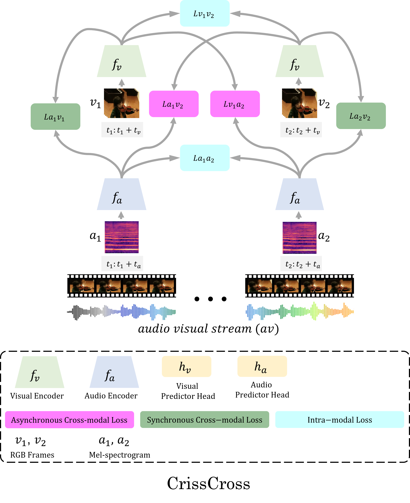

We present CrissCross, a self-supervised framework for learning audio-visual representations. A novel notion is introduced in our framework whereby in addition to learning the intra-modal and standard synchronous cross-modal relations, CrissCross also learns asynchronous cross-modal relationships. We show that by relaxing the temporal synchronicity between the audio and visual modalities, the network learns strong time-invariant representations. Our experiments show that strong augmentations for both audio and visual modalities with the relaxation of cross-modal temporal synchronicity optimize performance. To pretrain our proposed framework, we use 3 different datasets with varying sizes, Kinetics-Sound, Kinetics-400, and AudioSet. The learned representations are evaluated on a number of downstream tasks namely action recognition, sound classification, and retrieval. CrissCross shows state-of-the-art performances on action recognition (UCF101 and HMDB51) and sound classification (ESC50). The codes and pretrained models will be made publicly available.
We present the top-1 accuracy averaged over all the splits of each dataset. Please note the results mentioned below are obtained by full-finetuning on UCF101 and HMDB51, and linear classififer (one-vs-all SVM) on ESC50.
| Pretraining Dataset | Size | UCF101 | HMDB51 | ESC50 | Model |
|---|---|---|---|---|---|
| Kinetics-Sound | 22K | 88.3% | 60.5% | 82.8% | visual; audio |
| Kinetics400 | 240K | 91.5% | 64.7% | 86.8% | visual; audio |
| AudioSet | 1.8M | 92.4% | 66.8% | 90.5% | visual; audio |
We are grateful to Bank of Montreal and Mitacs for funding this research. We are also thankful to Vector Institute and SciNet HPC Consortium for helping with the computation resources.